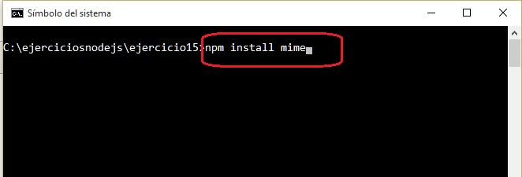
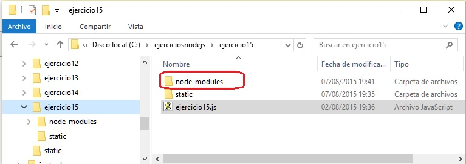
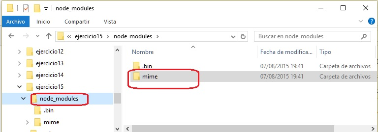
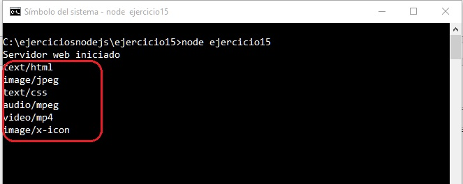
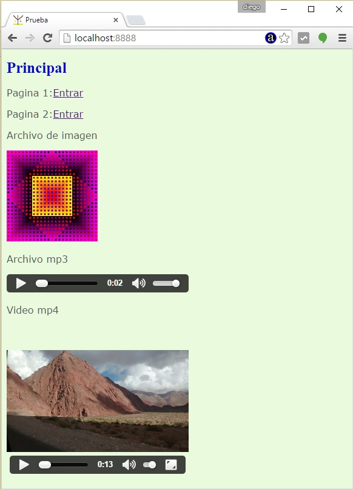
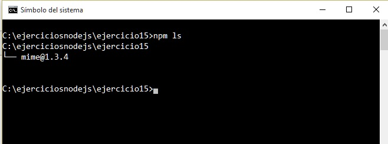

Es una herramienta que ya instala Node.js y la podemos utilizar desde la línea de comandos. Nos permite reusar código de otros desarrolladores y también nos permite compartir nuestro código.
Node.js viene por defecto con un conjunto limitado de módulos de uso general.
Nosotros podemos implementar toda la lógica para un determinado problema o buscar si otro desarrollador ya se le presentó dicho problema y compartió si código.
El sitio web npmjs es el repositorio oficial donde podemos compartir nuestros módulos y paquetes, y beneficiarnos de los módulos y paquetes que desarrollaron otros programadores.
Para darnos una idea de la cantidad de desarrolladores que están utilizando esta tecnología podemos decir que a 2015 hay más de 172000 paquetes publicados en el sitio.
Existen paquetes con muy diferentes objetivos como por ejemplos frameworks para sitios web (uno de esos llamado express), para acceder a una base de datos mysql o la base de datos mongoDB etc.
Veamos entonces como utilizar el programa npm para administrar paquetes.
Desarrollar nuevamente el sitio web que sirve páginas estáticas. Resolver el formato de archivo que retorna el servidor utilizando el paquete 'mime'.
Creemos una carpeta llamada ejercicio15 y en su interior dispongamos todo el contenido del ejercicio10 (solamente cambiemos el nombre del archivo *.js ejercicio10.js por ejercicio15.js)
Veamos primero como agregamos un paquete a nuestro proyecto. Nos ubiquemos en la carpeta ejercicio15 desde la linea de comando y tipeamos:
npm install mime

Una vez que ejecutamos el programa npm indicando que se va a instalar el paquete 'mime' veremos que en nuestro directorio del proyecto se crea una carpeta llamada 'node_modules' (si instalamos un segundo paquete siempre se insertaran en dicha carpeta) y en dicha carpeta encontraremos el paquete 'mime' (con todo su código fuente):

En la carpeta node_modules tenemos la subcarpeta mime (y en dicha carpeta todo el código fuente de este paquete):

Para usar un paquete es muy común que los desarrolladores incluyan una documentación para su uso.
Podemos entrar a la carpeta mime y abrir el archivo README.md donde explica como podemos utilizarlo.
Ahora vemos lo los cambios que se presentan a nuestro programa que sirve páginas estáticas usando el módulo 'mime':
ejercicio15.js
var http=require('http');
var url=require('url');
var fs=require('fs');
var mime=require('mime');
var servidor=http.createServer(function(pedido,respuesta){
var objetourl = url.parse(pedido.url);
var camino='static'+objetourl.pathname;
if (camino=='static/')
camino='static/index.html';
fs.exists(camino,function(existe){
if (existe) {
fs.readFile(camino,function(error,contenido){
if (error) {
respuesta.writeHead(500, {'Content-Type': 'text/plain'});
respuesta.write('Error interno');
respuesta.end();
} else {
var tipo=mime.lookup(camino);
console.log(tipo);
respuesta.writeHead(200, {'Content-Type': tipo});
respuesta.write(contenido);
respuesta.end();
}
});
} else {
respuesta.writeHead(404, {'Content-Type': 'text/html'});
respuesta.write('<!doctype html><html><head></head><body>Recurso inexistente</body></html>');
respuesta.end();
}
});
});
servidor.listen(8888);
console.log('Servidor web iniciado');
Hemos remplazado nuestro objeto literal que habíamos definido en el ejercicio10:
var mime = {
'html' : 'text/html',
'css' : 'text/css',
'jpg' : 'image/jpg',
'ico' : 'image/x-icon',
'mp3' : 'audio/mpeg3',
'mp4' : 'video/mp4'
};
Con la definicion de una variable que hace referencia al módulo 'mime' (la gran ventaja que este módulo almacena todos los tipo mime y no solo 6 de nuestro problema)
Rocordemos que requerimos un módulo con la sintaxis:
var mime=require('mime');
Cuando se ejecuta primero el Node.js busca el módulo en el directorio actual, si no lo encuentra lo busca en la carpeta 'nodo_modules'.
Otra parte que cambia el código de nuestro programa es cuando tenemos que obtener el tipo mime del recurso a devolver al navegador:
var tipo=mime.lookup(camino);
console.log(tipo);
respuesta.writeHead(200, {'Content-Type': tipo});
Llamamos a la función lookup indicando el recurso y nos devuelve el tipo mime que le corresponde.
Dispusimos un console.log para ver en la consola los distintos tipo mime que aparecen cuando el navegador solicita la página:

Esto ocurre al solicitar la página:

Este proyecto lo puede descargar en un zip con todos los archivos desde este enlace : ejercicio15
Podemos probar de tipear el parámetro ls cuando llamamos a npm y veremos todos los paquetes que contiene nuestro proyecto (en nuestro ejemplo solo uno 'mime'), luego del @ aparece el número de versión:

Veremos en conceptos sucesivos que el npm tiene otras funcionalidades.